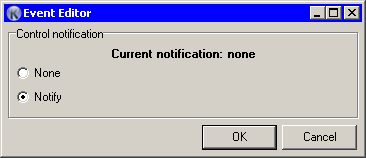
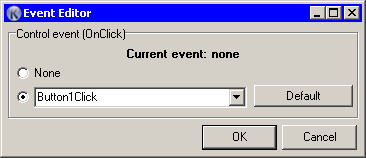

This is the Event editor that comes in two flavors.
|
When you form is set to loop mode, this is a simple dialog with two choices: Notify and None. If you set it to Notify, for your control will be generated variable in the loop. |
 |
|
When you form is set to event mode, dialog have a different look. In this dialog Koda populates all events of same type (for example, OnClick) from all form controls, fills combo box, and suggests new event name. Here you can agree with this name, change it to name you want, or choose one of existing event name from combo.
If you want to clear existing control event, choose “None”. |
 |